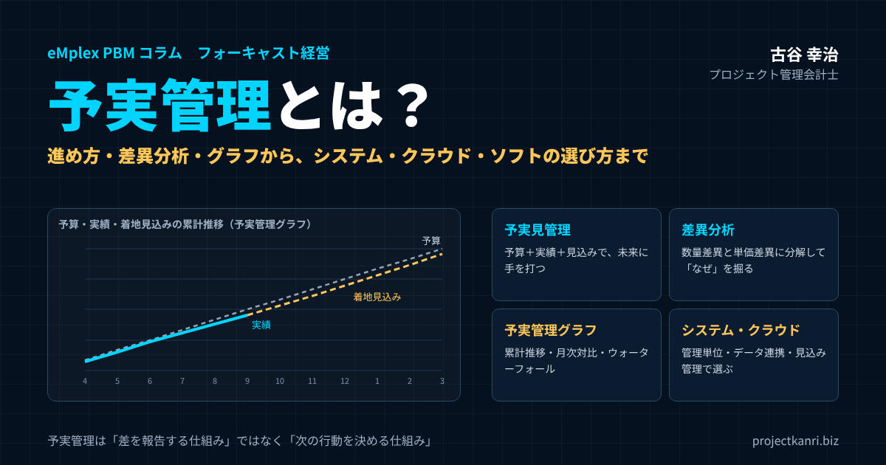

予実管理とは？進め方・差異分析・グラフの作り方から、予実管理システム・クラウド・ソフトの選び方まで実務家が解説

結論：予実管理は「差を報告する仕組み」ではなく「次の行動を決める仕組み」です
この記事の要点
- 予実管理とは：予算と実績を比べ、差異の原因を分析し、次の行動を決める経営管理の仕組み
- 予実見管理：予算・実績に「見込み（着地予想）」を加え、未来に手を打つ
- 差異分析：数量差異と単価差異などに分解し、上位の要因に絞って「なぜ」を掘る
- 予実管理のグラフ：累計推移、月次対比、要因別ウォーターフォールの3つ
- システム・クラウド・ソフト：管理の単位、データ連携、見込み管理の機能で選ぶ
プロジェクト管理会計士の古谷です。今回は、経営管理の基本中の基本である、予実管理を取り上げます。予実管理という言葉は、多くの経営者や管理部門の方にとって、おなじみのものだと思います。毎月、予算と実績を比べた表を作り、経営会議で報告している会社も多いでしょう。
しかし、私がこれまで200社を超える企業を支援してきた中で感じるのは、予実管理が本来の役割を果たしている会社は、決して多くないということです。予算と実績の差を報告して終わる。差の原因は「市況が悪かった」「案件がずれた」と一言で片づけられる。翌月も同じ報告が繰り返される。これでは、予実管理に費やした手間が、経営の判断に生かされていません。
結論から申し上げます。予実管理は、差を報告する仕組みではなく、次の行動を決める仕組みです。予算と実績の差を見つけ、その原因を突き止め、打ち手を決め、そして最終的にどこに着地するのかを見通す。この一連の流れが回って初めて、予実管理は経営の役に立ちます。
本稿では、予実管理とは何かという基本から、進め方、差異分析の方法、予実管理のグラフの作り方、エクセルでの管理の限界、そして予実管理システム・クラウド・ソフトの種類と選び方までを、順を追ってお伝えします。最後に、私の専門であるプロジェクト型ビジネスの予実管理についても触れます。
予実管理とは：予算と実績を比べ、経営の舵を取る仕組み
予実管理とは、予算と実績を比べて、その差、つまり予実差異を把握し、差が生じた原因を分析して、目標の達成に向けた対策を講じる経営管理の手法です。「予算実績管理」を略して、予実管理と呼びます。
予算は、会社が一定の期間に達成しようとする目標を、売上や費用、利益といった数字で表したものです。実績は、実際に達成した数字です。予算と実績を比べることで、会社が計画どおりに進んでいるのか、どこで計画から外れているのかが分かります。
予実管理の目的は、大きく三つあります。一つ目は、目標の達成状況を把握することです。二つ目は、計画から外れている原因を特定し、早めに手を打つことです。三つ目は、次の予算の精度を高めることです。予算と実績の差を分析し続けることで、自社の事業の動きへの理解が深まり、より現実的な予算を立てられるようになります。
予実管理は、経営のPDCAサイクルの中心にあります。計画である予算を立て、事業を実行し、予算と実績を比べて評価し、改善の行動につなげる。このサイクルを毎月回すことが、予実管理の本質です。
| 段階 | 予実管理での内容 |
|---|---|
| Plan（計画） | 年間・月別、部門別・プロジェクト別の予算を立てる |
| Do（実行） | 事業を実行し、実績のデータを記録する |
| Check（評価） | 予算と実績を比べ、差異の原因を分析する |
| Action（改善） | 打ち手を決めて実行し、見込みを更新する |
なお、予実管理は、上場企業や大企業だけのものではありません。むしろ、資金や人材に余裕のない中小企業こそ、計画とのずれに早く気づき、手を打つことの価値が大きいと言えます。
予算・実績・見込み：予実管理から「予実見管理」へ
予実管理を経営に役立てるうえで、私が特に強調したいのが、予算と実績に加えて、見込みを管理することです。予算、実績、見込みの三つを管理することを、予実見管理と呼ぶこともあります。
見込みとは、今期の残りの期間の予想を実績に加えた、期末の着地の見込みのことです。フォーキャストとも呼ばれます。たとえば、9月末の時点で上期の実績が分かっていても、それだけでは、期末に予算を達成できるのかどうかは分かりません。下期の見通しを加えて、着地を予想して初めて、今から何をすべきかが見えてきます。
| 項目 | 内容 | 時間軸 |
|---|---|---|
| 予算 | 期首に立てた目標の数字 | 計画（期首） |
| 実績 | 実際に達成した数字 | 過去（当月まで） |
| 見込み（フォーキャスト） | 実績＋残りの期間の予想＝期末の着地 | 未来（期末） |
予算と実績だけを見る予実管理は、過去を振り返る管理です。見込みを加えることで、予実管理は、未来に向けて手を打つ管理に変わります。私はこれを、バックキャスティングからフォアキャスティングへの転換と呼んでいます。期首に立てた予算から逆算して管理するだけでなく、日々の実績から未来の着地を見通し、目標との差を埋めるための行動を早めに起こす経営です。
見込みを立てるときに注意したいのは、願望を見込みにしないことです。「下期に頑張って取り戻す」という意気込みは大切ですが、見込みは、受注の状況や過去の傾向といった根拠に基づいて立てる必要があります。根拠のある見込みと、目標との差を正直に示すことで、初めて、差を埋めるための具体的な打ち手の議論が始まります。
予実管理のメリット：なぜ予実管理が必要なのか
予実管理を正しく運用すると、会社には多くのメリットがあります。
| メリット | 内容 |
|---|---|
| ① 問題の早期発見 | 売上の伸び悩みや費用の膨張に、期末を待たずに気づく |
| ② 経営判断の精度向上 | 事業ごとの進み具合をもとに資源配分を判断できる |
| ③ 目標の共有 | 部門・プロジェクトへ予算を落とし込み、全員で進み具合を共有 |
| ④ 予算の精度向上 | 差異の分析を続けることで、次の予算が現実的になる |
| ⑤ 外部への説明力 | 金融機関・投資家・上場審査に、計画と見通しを根拠を持って説明 |
第一に、問題の早期発見です。毎月の予実差異を見ていれば、売上の伸び悩みや費用の膨張に、期末を待たずに気づくことができます。早く気づけば、それだけ打てる手は多くなります。
第二に、経営判断の精度の向上です。どの事業が計画どおりに進み、どの事業が苦戦しているのかが数字で分かれば、資源の配分を根拠を持って判断できます。
第三に、組織全体の目標の共有です。予算を部門やプロジェクトに落とし込み、その進み具合を共有することで、社員一人ひとりが、自分の仕事が会社の目標にどう貢献しているのかを理解できます。
第四に、予算の精度の向上です。予実差異の原因を分析し続けることで、次の予算をより現実的に立てられるようになります。
そして第五に、外部への説明力の向上です。金融機関や投資家に対して、計画と実績、そして今後の見通しを、根拠を持って説明できるようになります。上場を目指す会社にとっては、予実管理の仕組みは、上場審査で確認される重要な項目の一つでもあります。
逆に言えば、予実管理が機能していない会社では、これらのメリットがすべて失われています。問題に気づくのは期末になってから、経営の判断は勘に頼り、社員は会社の目標と自分の仕事のつながりを感じられない。予実管理は、地味な仕組みですが、経営の土台そのものなのです。
予実管理の進め方：5つのステップ
予実管理は、次の五つのステップで進めます。
| ステップ | 内容 | ポイント |
|---|---|---|
| ① 予算の策定 | 科目別・月別、部門別・プロジェクト別の予算 | 責任者が明確になる単位に落とし込む |
| ② 実績の収集 | 会計・販売・勤怠・経費などから集計 | 予算と同じ科目・単位で集める |
| ③ 差異の把握と分析 | 金額と率で差異を把握し、原因を分析 | 影響の大きい上位の項目に絞る |
| ④ 原因の特定と対策 | 打ち手と担当・期限を決める | 「次に何をするか」で締めくくる |
| ⑤ 見込みの更新 | 期末の着地を予想し、予算との差を確認 | 毎月、同じ時期に更新する |
ステップ1は、予算の策定です。売上、原価、販売費及び一般管理費、利益といった科目ごとに、年間と月別の予算を立てます。会社全体の予算を、部門やプロジェクト、担当者の単位に落とし込んでおくと、誰がどの数字に責任を持つのかが明確になります。
ステップ2は、実績の収集です。会計システムや販売管理、勤怠、経費精算などから、実績の数字を集めます。予算と同じ科目、同じ単位で集計することが大切です。予算は部門別に立てているのに、実績が部門別に集計できなければ、比べることができません。
ステップ3は、予実差異の把握と分析です。予算と実績の差を、金額と率で把握します。そして、差の大きい項目から、なぜ差が生まれたのかを分析します。
ステップ4は、原因の特定と対策の決定です。差異の原因が分かったら、それに対する打ち手を決めます。誰が、何を、いつまでに行うのかを明確にします。
ステップ5は、見込みの更新です。当月までの実績と、これからの見通しをもとに、期末の着地の見込みを更新します。予算との差がどれだけ残るのかを確認し、必要に応じて、さらに打ち手を検討します。
この五つのステップを、毎月、同じ時期に、同じ形で回すことが、予実管理を定着させる鍵です。特に、月次の決算が締まってから、できるだけ早く予実の数字を出すことが重要です。翌月の半ばに前月の数字が出るようでは、手を打つ時間が限られてしまいます。
五つのステップの中で、多くの会社が手薄になっているのが、ステップ4とステップ5です。差異を把握し分析するところまではできていても、打ち手を決め、見込みを更新するところまで進んでいない。予実管理の価値の大部分は、この最後の二つのステップから生まれることを、改めて強調しておきます。
予算の立て方：トップダウンとボトムアップ、そして管理の単位
予実管理の出発点は、予算です。予算の立て方が適切でなければ、どれほど丁寧に実績と比べても、意味のある分析はできません。
予算の立て方には、大きく二つの方法があります。一つは、経営者が会社全体の目標を決め、それを部門に割り振るトップダウンの方法です。もう一つは、各部門が自部門の見込みを積み上げて、会社全体の予算をつくるボトムアップの方法です。トップダウンだけでは現場の実態と乖離した予算になりやすく、ボトムアップだけでは目標が保守的になりやすい。多くの会社では、両者を組み合わせ、経営の目標と現場の見込みをすり合わせて、最終的な予算を決めます。
以前のコラムで、予算を「現実感のある予算」と「目標到達のための予算」の二層で考える方法をご紹介しました。見えている受注や契約から積み上げた現実的な予算と、経営として目指す目標の予算を分けて持ち、その差をどう埋めるかを議論する。この考え方を取り入れると、予実管理の議論が、達成できたかどうかの評価から、差をどう埋めるかの行動へと変わります。
もう一つ大切なのが、予算の管理の単位です。会社全体の予算だけでは、どこで差が生まれたのかが分かりません。部門別、事業別、顧客別、プロジェクト別など、自社の経営の判断に必要な単位で予算を立て、同じ単位で実績を集計できるようにしておきます。
| 管理の単位 | 分かること |
|---|---|
| 会社全体 | 目標全体の達成状況 |
| 部門別 | どの部門が計画どおりか、責任の所在 |
| 事業別・製品別 | どの事業が利益を生んでいるか |
| 顧客別 | どの顧客との取引が計画どおりか |
| プロジェクト別 | どの案件で採算が崩れているか（プロジェクト型ビジネス） |
予実管理の対象となる予算の種類
予実管理で扱う予算には、いくつかの種類があります。どの予算を管理の対象にするかは、会社の規模や事業の性格によって異なりますが、基本となるのは損益に関わる予算です。
| 予算 | 内容 |
|---|---|
| 売上予算 | 製品・サービス別、顧客別、部門別、プロジェクト別の売上の計画 |
| 原価予算 | 売上に対応する仕入・外注費・労務費などの計画 |
| 経費予算 | 販売費及び一般管理費（広告・家賃・旅費など）の計画 |
| 人件費予算 | 人員計画にもとづく給与・賞与・法定福利費の計画 |
| 設備投資予算 | 設備・ソフトウェアなどへの投資の計画 |
| 資金予算 | 入金・支払・借入・返済などの資金の出入りの計画 |
売上予算は、すべての予算の出発点です。売上の見通しが決まらなければ、原価や経費の予算も決められません。原価予算と経費予算は、売上を生むためにかかる費用の計画です。人件費予算は、多くの会社で最も大きな費用であり、採用の計画と密接に結び付いています。設備投資予算と資金予算は、損益とは別に、お金の出入りを管理するための予算です。
予実管理を始めたばかりの会社では、まず売上と粗利、そして主要な経費の予実から始めることをお勧めします。すべての予算を一度に管理しようとすると、運用の負担が大きくなり、続きません。損益の予実管理が定着したら、資金予算や設備投資予算へと広げていきます。
予算の精度を上げる3つのコツ
予実管理の質は、予算の質に左右されます。予算と実績の差が大きすぎれば、分析の意味が薄れ、予算そのものが信頼されなくなります。予算の精度を上げるためのコツを三つ挙げておきます。
一つ目は、根拠を持って積み上げることです。売上であれば、既存の顧客からの継続の見込み、受注済みの案件、確度別の見込み案件、新規の開拓の目標というように、性格の異なる売上を分けて積み上げます。根拠の異なる数字を分けておけば、差異が出たときに、どの部分の見込みが外れたのかが分かります。
二つ目は、季節性を織り込むことです。年間の予算を単純に12で割って月別にすると、繁忙期と閑散期の差が反映されず、毎月の予実の差が意味を持たなくなります。過去の月別の実績をもとに、月ごとの波を織り込んだ予算にします。
三つ目は、前期の予実差異を振り返ることです。前期の予算と実績がなぜずれたのかを振り返り、その学びを今期の予算に反映させる。この振り返りを毎年続けることで、予算の精度は着実に上がっていきます。
予実差異分析の方法：差の大きさより「なぜ」を掘る
予実管理の中心は、予実差異の分析です。差異分析の目的は、差の大きさを報告することではなく、差が生まれた原因を突き止め、次の行動を決めることです。
差異は、大きく有利差異と不利差異に分けられます。売上が予算を上回った、費用が予算を下回ったといった、利益にとって有利な差異と、その逆の不利な差異です。不利差異だけでなく、有利差異も分析することが大切です。有利差異の中には、たまたま費用の計上が遅れただけで、翌月に反動が来るものもあるからです。
差異の原因を掘り下げるときは、売上であれば、数量の差と単価の差に分けて考えるのが基本です。販売数量が予算より少なかったのか、単価が予算より低かったのかで、打つべき手はまったく異なります。
| 項目 | 予算 | 実績 | 差異 |
|---|---|---|---|
| 単価 | 10万円 | 9.5万円 | −0.5万円 |
| 数量 | 1,000個 | 1,050個 | ＋50個 |
| 売上 | 10,000万円 | 9,975万円 | −25万円（不利） |
| 数量差異 | （1,050−1,000）×10万円＝＋500万円 | ||
| 単価差異 | （9.5−10）万円×1,050個＝−525万円 |
※数量差異＋単価差異＝売上の差異。数値は説明のための例です。
表の例では、予算の売上が単価10万円で1,000個の1億円、実績が単価9.5万円で1,050個の9,975万円でした。差異は25万円の不利差異ですが、分解すると、数量は50個多く売れて500万円の有利差異、単価は5,000円下がって525万円の不利差異です。つまり、販売数量は予算を上回ったものの、値引きが利益を削っていたことが分かります。打つべき手は、販売数量を増やすことではなく、値引きの管理です。
差異の分析では、すべての差異を説明しようとしないことも大切です。金額の大きい差異、率の大きい差異から順に、上位の項目に絞って深く掘る。そして、分析の結果は、必ず「次に何をするか」で締めくくります。
差異の原因には、計画と実行のどちらに問題があったのかという視点もあります。予算そのものが現実的でなかったのか、予算は妥当だったが実行が計画どおりに進まなかったのか。前者であれば次の予算の立て方を、後者であれば実行の進め方を見直す必要があります。
修正予算とローリングフォーキャスト：期中に状況が変わったら
期首に立てた予算は、期中に状況が大きく変わると、実態とかけ離れたものになります。大口の顧客を失った、想定外の大型案件を受注した、原材料や人件費が大きく上がった。こうしたときに、どう対応すればよいのでしょうか。
一つの方法は、修正予算を立てることです。期の半ばなどに、予算そのものを見直し、新しい予算と実績を比べるようにします。ただし、予算を頻繁に修正すると、目標としての意味が薄れます。当初の予算も残し、当初予算との差と、修正予算との差の両方を見られるようにしておくことが大切です。
もう一つの方法は、予算は変えずに、見込みを更新し続けることです。先に述べた予実見管理の考え方です。さらに進んだ方法として、ローリングフォーキャストがあります。会計の年度にとらわれず、常に先の一定の期間、たとえば12か月先までの見通しを、毎月または四半期ごとに更新し続ける方法です。年度末が近づいても、常に先の見通しを持って経営できるのが特徴です。ローリングフォーキャストの実務については、以前のコラムで詳しく解説しています。
財務の予実と、先行するKPIの予実をつなぐ
予実管理というと、売上や利益といった財務の数字の比較を思い浮かべる方が多いと思います。しかし、財務の数字は、事業の活動の結果です。結果だけを見ていても、手を打つのが遅れることがあります。
そこで大切になるのが、財務の数字に先行するKPIの予実管理です。たとえば、営業であれば、商談の件数、提案の件数、受注の確度の高い案件の金額。プロジェクト型ビジネスであれば、受注の残高、社員の稼働率、プロジェクトの進捗率。こうした先行する指標にも目標を置き、実績と比べることで、財務の数字に表れる前に、変化に気づくことができます。
| 領域 | 先行するKPI | 影響する財務の数字 |
|---|---|---|
| 営業 | 商談件数、提案件数、確度の高い案件の金額 | 数か月後の売上 |
| 受注 | 受注残高、受注件数 | 今後の売上 |
| 人材 | 稼働率、採用人数 | 売上の効率、人件費 |
| プロジェクト | 進捗率と原価消化率、着地見込み | プロジェクトの粗利 |
たとえば、受注の残高が予算を下回り始めたら、数か月後の売上の不足が見えてきます。稼働率が下がり始めたら、人件費に対する売上の効率が落ちていることが分かります。財務の予実と、先行するKPIの予実をあわせて見ることで、予実管理は、より早く手を打つための仕組みになります。
予実管理のグラフ：一目で状況が分かる3つの見せ方
予実管理の結果を経営会議で共有するとき、数字の表だけでは、状況が直感的に伝わりません。予実管理のグラフを使うことで、予算と実績の関係、差異の要因、今後の見通しを、一目で伝えることができます。ここでは、予実管理で特に役立つ三つのグラフをご紹介します。
一つ目は、予算・実績・着地見込みの累計推移グラフです。期首からの累計で、予算の線、実績の線、そして実績の先に伸びる着地見込みの線を、一つのグラフに描きます。
このグラフの良いところは、期末に向けて予算との差がどう推移していくのかが、一目で分かることです。図の例では、9月末の実績は予算をわずかに下回り、着地見込みも予算に50百万円届かない見通しです。下期にこの差をどう埋めるのかという議論に、自然とつながります。
二つ目は、月次の予算と実績の対比グラフです。月ごとに予算と実績の棒を並べ、達成率を表示します。達成率が一定の水準を下回った月を色分けすると、課題のある月がすぐに分かります。
三つ目は、予算と実績の差異を要因別に分解するウォーターフォールグラフです。予算の利益から出発し、売上の数量差異、価格差異、労務費や外注費の差異といった要因ごとに、利益を押し上げた分と押し下げた分を順に積み重ね、実績の利益にたどり着く様子を示します。
ウォーターフォールグラフを使えば、利益が予算に届かなかった理由を、要因ごとの大きさで説明できます。図の例では、売上の数量の不足と労務費の超過が、利益を押し下げた主な要因であることが分かります。経営会議の議論を、最も影響の大きい要因に集中させることができます。
| グラフ | 分かること | 使う場面 |
|---|---|---|
| 累計推移グラフ（予算・実績・見込み） | 期末に向けた予算との差の推移と着地 | 経営会議の冒頭、全体の状況共有 |
| 月次対比グラフ（達成率付き） | 月ごとの達成状況、課題のある月 | 月次の振り返り |
| ウォーターフォールグラフ | 差異の要因とその大きさ | 差異の原因の説明と、議論の焦点づけ |
| 部門・プロジェクト別の一覧（色分け） | どこで差異が出ているか | 責任者ごとの確認 |
グラフを作るときの注意点として、色の使い方を統一することをお勧めします。予算は灰色、実績は青、見込みは黄色、不利な差異は赤、有利な差異は緑というように、会社の中で色の意味を決めておけば、どの資料を見ても、すぐに状況を読み取れるようになります。
グラフは、作ることが目的ではありません。経営会議で、そのグラフを見た経営者が、何を判断すべきかが分かることが大切です。グラフの横に、そのグラフから読み取れる結論を一文で書き添えておくと、議論がすぐに本題に入れます。
予実管理表・レポートの作り方：経営会議で使える一枚に
予実管理の結果をまとめた予実管理表やレポートは、経営会議で使われることを前提に設計します。私がお勧めしているのは、一枚目に結論をまとめる構成です。
| ページ | 内容 |
|---|---|
| 1枚目（サマリー） | 売上・利益の予算・実績・達成率・着地見込み、主な差異と原因、打ち手 |
| 2枚目 | 累計推移グラフ、差異のウォーターフォールグラフ |
| 3枚目以降 | 部門別・事業別・プロジェクト別の予実明細 |
| 最終ページ | 前月に決めた打ち手の実行状況 |
一枚目には、売上と利益の予算・実績・達成率・着地見込みを並べたサマリーと、今月の主な差異とその原因、そして打ち手を、簡潔にまとめます。経営者が最初の一枚を読むだけで、状況と論点が分かるようにすることが大切です。二枚目以降に、部門別やプロジェクト別の明細、差異の詳細、グラフを付けます。
予実管理表を作るうえでもう一つ大切なのは、毎月同じ形式で作ることです。形式が毎月変わると、前月との比較ができず、読み手も慣れません。形式を固定し、数字だけが更新される状態にしておけば、作成の手間も減り、読み手は変化に集中できます。
レポートの数字には、必ず単位と、いつ時点の数字なのかを明記してください。百万円単位なのか千円単位なのか、速報値なのか確定値なのか。小さなことですが、こうした情報が欠けていると、会議の場で数字の解釈をめぐる混乱が生まれ、本来の議論の時間が失われます。
予実管理会議の進め方：数字を「行動」に変える場にする
予実管理を経営に生かすかどうかは、予実の数字を議論する会議の進め方に大きく左右されます。予実管理の会議が、数字の読み上げの場になっている会社は少なくありません。
| 順番 | 内容 | 時間の目安 |
|---|---|---|
| ① | 前月に決めた打ち手の実行状況の確認 | 1割 |
| ② | 予実・着地見込みのサマリー確認 | 1割 |
| ③ | 差異・見込み悪化の大きい項目の原因と打ち手の議論 | 6割 |
| ④ | 打ち手・担当者・期限の決定 | 2割 |
会議の冒頭では、前月に決めた打ち手が実行されたかを確認します。決めたことが実行されていなければ、どれだけ分析しても数字は変わりません。次に、今月の予実と着地見込みのサマリーを確認し、予算との差が大きい項目、着地見込みが悪化した項目に議論を絞ります。そして、それぞれについて原因と打ち手を議論し、担当者と期限を決めて終わります。
会議の時間配分も大切です。数字の報告に時間を使いすぎず、議論と意思決定に時間の大半を使う。そのためには、会議の前に資料を配布し、参加者が事前に読んでおくことを前提にするとよいでしょう。会議の場では、資料の説明ではなく、論点の議論から始めます。
予実管理の役割分担：経営・経理・FP&A・部門長
予実管理を回すには、関わる人それぞれの役割を明確にしておく必要があります。
| 役割 | 主な仕事 |
|---|---|
| 経営者 | 目標の決定、打ち手の判断、資源配分 |
| 経理 | 実績を正確に、期日どおりに締める |
| FP&A・経営企画 | 予実分析、見込みの更新、経営への提言 |
| 部門長・PM | 自分の担当の予実に責任を持ち、原因を説明し、打ち手を実行 |
経営者は、予算の目標を決め、予実管理の会議で打ち手を判断し、資源の配分を決めます。経理は、実績の数字を正確に、期日どおりに締めます。FP&Aや経営企画は、予実の分析と見込みの更新を行い、経営への提言をまとめます。そして、部門長やプロジェクトマネージャーは、自分の担当の予実に責任を持ち、差異の原因を説明し、打ち手を実行します。
予実管理がうまく回らない会社では、この役割分担が曖昧なことが多いものです。経理が予実の数字を出すところまで担い、その先の分析や打ち手の議論を誰も担っていない。部門長が、自分の予実を自分で見ていない。役割を明確にし、特に部門長やプロジェクトマネージャーが自分の数字に責任を持つ状態をつくることが、予実管理を定着させる鍵です。
予実管理でよくある5つの失敗
予実管理は、仕組みとしては単純ですが、多くの会社で形骸化しています。支援の現場でよく見る失敗を五つ挙げておきます。
| 失敗 | 対策 |
|---|---|
| 差異を報告して終わる | 原因と打ち手、担当・期限まで決める |
| 実績の集計が遅い | 締めの日程を決め、データ連携で集計を自動化 |
| 予算が形骸化 | 現実的な予算と目標の予算を分け、見込みで差を見る |
| 見込みがない | 毎月、期末の着地見込みを更新する |
| エクセルの属人化 | 形式を固定し、システムで仕組み化する |
一つ目は、差異を報告して終わることです。差異の金額は報告されても、原因と打ち手が議論されなければ、予実管理は意味を持ちません。
二つ目は、実績の集計が遅いことです。前月の予実の数字が、翌月の後半にならないと出てこない。これでは、手を打つ時間がほとんど残りません。
三つ目は、予算が形骸化していることです。期首に立てた予算が非現実的で、誰も達成できると思っていない。あるいは、期中に状況が大きく変わったのに、予算のまま比べ続けている。予算と実績の差が大きすぎると、比べること自体の意味が薄れます。
四つ目は、見込みがないことです。予算と実績だけを比べ、期末の着地を見通していない。そのため、期末が近づいてから、予算の未達が確定的になって慌てることになります。
五つ目は、エクセルによる属人化です。予実管理の表が、特定の担当者が作った複雑なエクセルで管理されており、その担当者がいなければ誰も更新できない。次の章で詳しく見ていきます。
これらの失敗の多くは、仕組みの問題であると同時に、文化の問題でもあります。予実の差異を報告した担当者を責める組織では、差異は小さく見せられ、見込みは楽観的に書き換えられます。差異を早く、正直に報告したことを評価する文化があって、初めて予実管理は機能します。
エクセルでの予実管理の限界
多くの会社では、予実管理をエクセルで行っています。エクセルは、自由度が高く、誰でも使えるため、予実管理を始めるには最適な道具です。小規模な会社や、管理の単位が少ない段階では、エクセルで十分に運用できます。
しかし、会社の規模が大きくなり、部門やプロジェクトの数が増えてくると、エクセルでの予実管理には、いくつかの限界が見えてきます。
| 限界 | 起きること |
|---|---|
| 集計の手間 | 複数システムからの出力・貼り付け・突き合わせに毎月時間がかかる |
| 誤りのリスク | 転記ミスや数式の誤りに気づかないまま報告される |
| 属人化 | 作成者しか更新・修正できない |
| 版の管理 | どのファイルが最新か分からなくなる |
| 分析の限界 | 切り口を変えるたびに表を作り直す |
第一に、集計の手間です。会計システムや販売管理、勤怠のシステムから実績のデータを出力し、エクセルに貼り付け、予算と突き合わせる。この作業に、毎月多くの時間がかかります。第二に、誤りのリスクです。手作業の転記や、複雑な数式の誤りによって、数字が間違っていることに気づかないまま、経営会議に報告されてしまうことがあります。第三に、属人化です。複雑なエクセルは、作った担当者にしか分からなくなります。第四に、共有と版の管理です。複数の人が別々のファイルを更新し、どれが最新版なのか分からなくなる。第五に、分析の限界です。部門別、プロジェクト別、月別といった切り口を変えて分析しようとすると、そのたびに表を作り直す必要があります。
こうした限界を感じ始めたら、予実管理システムの導入を検討する時期です。
中小企業の予実管理の始め方：最初の3か月でやること
これから予実管理を始める中小企業の方に向けて、最初の3か月で取り組むべきことを整理しておきます。
一か月目は、月次の決算を締める日程を決め、毎月の損益の実績が、決まった日に出る状態をつくります。予実管理の前提は、実績が速く正確に出ることです。会計の処理が月末に追いついていない会社では、まずここから整えます。
二か月目は、売上と粗利、主要な経費について、月別の予算を立てます。完璧な予算でなくて構いません。前年の実績をもとに、今期の見通しを加えた、現実的な数字を置いてみます。そして、その月の実績と比べ、差の大きい項目について、なぜ差が出たのかを考えてみます。
三か月目は、期末の着地見込みを出してみます。これまでの実績と、残りの月の見通しを足して、期末にどこに着地しそうかを予想します。そして、予算との差をどう埋めるのかを、経営者と管理部門で話し合います。
この三つができれば、予実管理の基本の形はできあがりです。最初はエクセルで十分です。運用を続けるうちに、管理したい単位が増え、集計の手間が気になり始めたら、システムの導入を検討すればよいのです。
予実管理システム・ソフトとは：種類と特徴を比較する
予実管理システムとは、予算の策定、実績の収集、予実差異の分析、見込みの更新、レポートの作成といった予実管理の業務を、効率化し、仕組み化するためのシステムやソフトウェアです。予実管理ソフト、予算管理システムとも呼ばれます。
予実管理に使える道具には、いくつかの種類があります。自社の規模や業種、管理したい単位によって、適したものは異なります。
| 種類 | 強み | 弱み | 向いている会社 |
|---|---|---|---|
| エクセル・スプレッドシート | 費用がかからず自由に設計できる | 集計の手間、誤り、属人化 | 小規模、管理単位が少ない段階 |
| 会計ソフトの予算機能 | 会計の科目単位の比較が容易 | 細かな単位や見込みの管理に弱い | 科目別の大まかな管理で十分な会社 |
| BIツール | 可視化・ダッシュボードに強い | 予算や見込みの入力機能が弱い | データ基盤が整っている会社 |
| 予実管理クラウド | 予算〜実績〜差異〜見込み〜レポートを一体で | 業種特有の単位に合わない場合も | 部門・事業別の予実を仕組み化したい会社 |
| ERP | 基幹業務と一体で管理 | 導入の規模と費用が大きい | 大規模な会社 |
| プロジェクト予実管理システム | プロジェクト単位の予実・工数・労務費・着地 | 一般的な部門管理には過剰な場合も | プロジェクト型ビジネスの会社 |
※一般的な傾向の整理です。個別の製品により機能は異なります。
エクセルやスプレッドシートは、導入の費用がかからず、自由に設計できる反面、先に述べた限界があります。会計ソフトに付いている予算の機能は、会計の科目単位での予実の比較には便利ですが、部門やプロジェクトといった細かな単位の管理や、見込みの管理には向かないことが多いでしょう。
BIツールは、さまざまなデータを集めてグラフやダッシュボードで可視化することに優れています。ただし、予算を作成し、見込みを更新するといった入力の機能は弱く、データを整える仕組みが別に必要になります。
予実管理に特化したクラウドのシステムは、予算の策定から実績の収集、差異の分析、見込みの更新、レポートまでを一つの仕組みで扱えるのが特徴です。会計システムなどとデータを連携し、集計の手間を大きく減らせます。ERPは、会計、販売、購買、人事などの基幹の業務を統合するシステムで、その一部として予実管理の機能を持つものもありますが、導入の規模と費用は大きくなります。
そして、プロジェクト型ビジネスには、プロジェクトごとの予実管理に特化したシステムがあります。プロジェクト単位で予算と実績と着地見込みを管理し、工数から労務費を計算して原価に反映できるのが特徴です。
どの種類が自社に合うかを判断するには、まず自社の予実管理の課題を明確にすることが大切です。集計の手間が課題なのか、見込みの管理ができていないことが課題なのか、プロジェクトの採算が見えないことが課題なのか。課題によって、選ぶべき道具は変わります。
予実管理クラウドのメリット：なぜクラウドが選ばれるのか
最近では、予実管理システムの多くが、クラウドで提供されています。予実管理をクラウドで行うことには、いくつかのメリットがあります。
| 項目 | 内容 |
|---|---|
| 導入の速さ・費用 | サーバー不要、短期間で開始、月額料金で運用 |
| データ連携 | 会計・勤怠・経費精算などから実績を自動で取り込む |
| どこからでも同じ数字 | 経営・部門・PMが同じ最新の数字を確認 |
| 継続的な改善 | 提供側が機能を改善し続ける |
| 注意点 | セキュリティとアクセス権限の設定（業績・人件費などの機密情報） |
第一に、導入の速さと費用の低さです。自社にサーバーを用意する必要がなく、利用の申し込みをすれば、短い期間で使い始めることができます。初期の費用を抑え、月額の利用料で運用できるものが多くあります。
第二に、データの連携のしやすさです。会計ソフトや勤怠、経費精算などのクラウドサービスとデータを連携し、実績を自動で取り込める仕組みを持つものが増えています。手作業の集計がなくなれば、予実の数字を、月次の締めの後すぐに確認できます。
第三に、どこからでも同じ数字を見られることです。経営者、部門の責任者、プロジェクトマネージャーが、それぞれの場所から、同じ最新の数字を確認できます。ファイルの版の管理に悩むこともありません。
第四に、継続的な機能の改善です。クラウドのサービスは、提供する側が機能を改善し続けるため、利用する側は、追加の費用をかけずに、新しい機能を使えることが多くあります。
一方で、クラウドを利用する際には、セキュリティとアクセス権限の管理に注意が必要です。予実管理のデータには、会社の業績や、部門別の利益、場合によっては人件費などの機密性の高い情報が含まれます。誰がどのデータを閲覧できるのかを、役割ごとに適切に設定することが大切です。
クラウドの予実管理システムを選ぶ際には、データの保管場所や、提供する会社のセキュリティの認証の取得状況、データの出力のしやすさも確認しておくとよいでしょう。将来、別のシステムに移る可能性も考え、自社のデータを取り出せる仕組みがあるかどうかは、意外に見落とされがちな点です。
予実管理システムの選び方：10のチェックポイント
予実管理システムを選ぶときに確認したいポイントを、十に整理しました。
| No. | 確認すること |
|---|---|
| 1 | 自社が管理したい単位（部門・事業・顧客・プロジェクト）で予実を管理できるか |
| 2 | 会計・販売・勤怠・経費などから実績を自動で取り込めるか |
| 3 | 期末の着地見込みを更新・管理できるか |
| 4 | 差異を要因別に分析できるか |
| 5 | グラフやレポートを経営会議でそのまま使えるか |
| 6 | 役割ごとのアクセス権限を細かく設定できるか |
| 7 | 現場の責任者が自分の数字を見やすい画面があるか |
| 8 | 予算の版（当初・修正）を管理できるか |
| 9 | 導入の支援や運用の相談の体制があるか |
| 10 | 費用が、得られる効果（集計時間の削減・判断の早期化）に見合うか |
中でも最も大切なのは、自社が管理したい単位で予実を管理できるかどうかです。部門別に管理したいのか、事業別なのか、顧客別なのか、プロジェクト別なのか。この単位が合っていなければ、どれほど機能が豊富なシステムでも、期待した効果は得られません。
次に大切なのが、実績のデータをどこから、どのように取り込めるかです。会計システムとの連携だけでよいのか、販売管理や勤怠、経費精算のデータも必要なのか。データの取り込みに手作業が残ると、エクセルの限界を解消できません。
そして、見込みの管理ができるかどうかです。予算と実績の比較だけでなく、期末の着地の見込みを更新し、予算との差を見通せる機能があるかを確認してください。
選定にあたっては、実際の自社のデータを使って、試しに運用してみることをお勧めします。デモの画面で見る印象と、自社のデータで運用したときの使い勝手は、大きく異なることがあります。
そして、システムを選ぶ前に、自社の予実管理の業務の流れを書き出しておくことをお勧めします。予算をいつ、誰が立て、実績はどこから集め、誰がいつ分析し、どの会議で議論するのか。この流れが整理できていれば、システムに求める機能が明確になり、選定の判断もしやすくなります。
予実管理システムの導入の進め方と注意点
予実管理システムの導入は、システムを入れることが目的ではありません。予実管理の仕組みを、システムの力で定着させることが目的です。導入にあたっては、次の点に注意してください。
第一に、システムを入れる前に、管理の単位と科目、締めの日程といった、予実管理のルールを決めることです。ルールが決まっていないままシステムを入れると、システムに合わせてルールを後から決めることになり、混乱が生じます。
第二に、小さく始めることです。いきなり全社のすべての部門で始めるのではなく、一部の部門や事業で試行し、運用を固めてから広げます。
第三に、エクセルとの並行期間を決めることです。導入の初期は、エクセルとシステムの両方で数字を確認し、一致することを確かめます。ただし、並行期間を長く続けると、二重の手間がかかります。期間を区切って、エクセルからの移行を完了させます。
第四に、使う人に価値を感じてもらうことです。予実管理システムは、管理部門だけでなく、部門の責任者やプロジェクトマネージャーが自分の数字を見るために使って、初めて効果を発揮します。現場の責任者が、自分の判断に役立つと感じられる画面やレポートを用意することが、定着の鍵です。
導入後も、運用の見直しを続けることが大切です。半年ほど運用したら、予実の数字が出るまでの日数は短くなったか、会議の議論は変わったか、現場の責任者は自分の数字を見ているかを確かめ、必要に応じて設定や運用のルールを見直します。
プロジェクト型ビジネスの予実管理：プロジェクト単位で予算・実績・見込みを見る
最後に、私の専門であるプロジェクト型ビジネスの予実管理について触れておきます。システム開発、コンサルティング、建設、広告や映像の制作といったプロジェクト型ビジネスでは、一般的な部門別の予実管理だけでは、経営の実態がつかめません。
プロジェクト型ビジネスでは、売上も原価も、一つひとつのプロジェクトから生まれます。そのため、予実管理も、プロジェクトの単位で行う必要があります。プロジェクトごとに、受注の時点で予算を立て、実績の原価を集め、完了までの着地の見込みを毎月更新する。そして、プロジェクトの予実を積み上げて、部門や会社全体の予実を見る。これが、プロジェクト型ビジネスの予実管理の基本です。
| 項目 | 一般的な予実管理 | プロジェクト型ビジネス |
|---|---|---|
| 管理の単位 | 部門・科目 | プロジェクト（を積み上げて部門・全社） |
| 期間 | 月・四半期・年度 | 期間に加え、受注から完了まで |
| 原価の中心 | 仕入・経費など | 労務費（工数×コストレート）・外注費 |
| 見込み | 期末の着地 | 期末の着地＋プロジェクト完了時の着地 |
| 見るべき兆候 | 売上・費用の差異 | 進捗率に対する原価消化率、着地見込みの悪化 |
プロジェクト型ビジネスの予実管理で特に大切なのは、労務費の扱いです。原価の大部分は社員の人件費であり、それを工数とコストレートからプロジェクトの原価として計算しなければ、プロジェクトの本当の採算は見えません。また、プロジェクトの予実では、期間の予実だけでなく、完了時点の予実、つまり受注時の予算と、完了時の着地見込みの比較が重要になります。進捗に比べて原価の消化が速いプロジェクトは、着地で予算を超える可能性が高く、早めの対応が必要です。
一般的な予実管理のシステムは、部門や科目を単位にした管理を前提にしているものが多く、プロジェクト単位の予実や、工数からの労務費の計算には対応していないことがあります。プロジェクト型ビジネスの会社がシステムを選ぶときは、この点を必ず確認してください。
プロジェクト型ビジネスでは、部門の予実が予算を達成していても、その内訳を見ると、一部の大型のプロジェクトの好調が、多くのプロジェクトの不調を覆い隠していることがあります。部門の数字だけで安心せず、プロジェクトごとの予実まで掘り下げて確認する習慣が大切です。
業種別に見る予実管理のポイント
予実管理の基本は共通していますが、業種によって、重点を置くべき点は異なります。
| 業種 | 重点を置く点 |
|---|---|
| 小売・飲食 | 店舗別の売上・客数・客単価、原価率、人件費率 |
| 製造業 | 製品別の数量・単価、原価差異（材料・労務・製造間接費） |
| SaaS・サブスクリプション | MRR・解約率・新規獲得、顧客獲得コスト |
| システム開発・コンサル | プロジェクト別の予実と着地、稼働率、労務費 |
| 建設業 | 工事別の実行予算と実績、出来高、完成工事原価 |
| 広告・制作 | 案件別の粗利、外注費、追加請求の管理 |
自社の業種で、売上や原価がどのような単位で、どのようなタイミングで生まれるのかを踏まえて、予実管理の単位と見るべき指標を決めることが大切です。業種に合わない管理の仕方をしていると、どれほど丁寧に予実を比べても、経営の判断に役立つ情報は得られません。
予実管理の成熟度を測る指標
予実管理の仕組みが機能しているかどうかは、いくつかの指標で確かめることができます。
| 指標 | 見方 |
|---|---|
| 予実の数字が出る日 | 月次の締め後、何営業日で予実が確認できるか |
| 着地見込みの精度 | 期中の見込みと期末実績の差（小さいほど成熟） |
| 打ち手の実行率 | 経営会議で決めた打ち手が期限内に実行された割合 |
| 予算の精度 | 予算と実績の差の大きさの推移 |
| 現場の利用度 | 部門長・PMが自ら予実を確認している頻度 |
特に、着地見込みの精度は、予実管理の成熟度を最もよく表す指標です。期の半ばに出した着地見込みと、実際の期末の実績の差が小さいほど、予実管理が事業の実態をよく捉えていると言えます。最初は大きくずれていても、毎月の見込みの更新と、その振り返りを続けることで、精度は着実に上がっていきます。
eMplex PBMで、プロジェクト単位の予実管理をクラウドで
eMplex PBMは、プロジェクト型ビジネスのための予実管理のクラウドサービスです。
業種別のテンプレートから予算の科目を選んで、プロジェクトごとに予算を登録し、売上・労務費・外注費・直接経費を実績として記録します。タイムシートで記録した工数は、案件別の労務費の原価にリアルタイムで反映され、進捗率と粗利率をリアルタイムに把握できます。フォーキャストのレポートで着地見込みを月次で更新し、粗利率のアラートで予算から外れそうなプロジェクトを早めに知らせます。事業別・プロジェクト別の収支レポートで、プロジェクトの予実を事業や会社全体に積み上げて確認でき、会計の仕訳データの出力にも対応しています。予算・実績・見込みを、プロジェクトの単位で一つの基盤に集め、次の行動を決めるための予実管理を実現します。
まとめ：予実管理を、未来に手を打つ仕組みに
予実管理とは、予算と実績を比べ、差の原因を分析し、次の行動につなげる経営管理の仕組みです。その本質は、差を報告することではなく、次の行動を決めることにあります。
予算・実績に見込みを加えて着地を見通すこと。差異を数量と単価などに分解して原因を掘ること。累計推移や月次対比、ウォーターフォールといったグラフで状況を一目で伝えること。そして、エクセルの限界を感じたら、自社の管理の単位に合った予実管理システムやクラウドを検討すること。これらを一つずつ整えていけば、予実管理は、過去を振り返る作業から、未来に手を打つ経営の仕組みへと変わっていきます。
まずは、今月の予実管理表に、期末の着地見込みの欄を一つ加えることから始めてみてください。それだけで、経営会議の議論は、過去の評価から、未来の行動へと変わり始めるはずです。
よくある質問（FAQ）
Q. 予実管理とは何ですか？
A. 予算と実績を比べて予実差異を把握し、その原因を分析して、目標の達成に向けた対策を講じる経営管理の手法です。予算実績管理の略で、経営のPDCAサイクルの中心にあります。予算・実績に見込み（着地予想）を加えて管理すると、未来に向けて手を打つ管理になります。
Q. 予実管理はどのように進めればよいですか？
A. ①予算の策定、②実績の収集、③予実差異の把握と分析、④原因の特定と対策の決定、⑤見込み（着地）の更新、の5つのステップを毎月同じ時期・同じ形で回します。月次決算の締め後、できるだけ早く予実の数字を出すことが重要です。
Q. 予実管理のグラフはどのように作ればよいですか？
A. 予算・実績・着地見込みの累計推移グラフ、月次の予算と実績の対比グラフ（達成率付き）、予算と実績の差異を要因別に分解するウォーターフォールグラフの3つが特に有効です。予算は灰色、実績は青、見込みは黄色など、色の意味を社内で統一すると読み取りやすくなります。
Q. 予実管理システム・ソフトにはどのような種類がありますか？
A. エクセル・スプレッドシート、会計ソフトの予算機能、BIツール、予実管理に特化したクラウドシステム、ERP、プロジェクト型ビジネス向けのプロジェクト予実管理システムなどがあります。管理したい単位（部門・事業・顧客・プロジェクト）とデータ連携、見込み管理の機能で選ぶことが大切です。
Q. 予実管理をクラウドで行うメリットは何ですか？
A. 導入が速く初期費用を抑えられる、会計や勤怠などのクラウドサービスと連携して実績を自動で取り込める、どこからでも同じ最新の数字を見られる、機能が継続的に改善される、といったメリットがあります。一方で、機密性の高いデータを扱うため、アクセス権限の管理が重要です。
Q. エクセルでの予実管理の限界は何ですか？
A. 実績データの集計・転記の手間、手作業や数式の誤り、作成者への属人化、複数ファイルの版管理の混乱、切り口を変えた分析のたびに表を作り直す必要がある点などです。部門やプロジェクトの数が増えてきたら、予実管理システムの検討時期です。